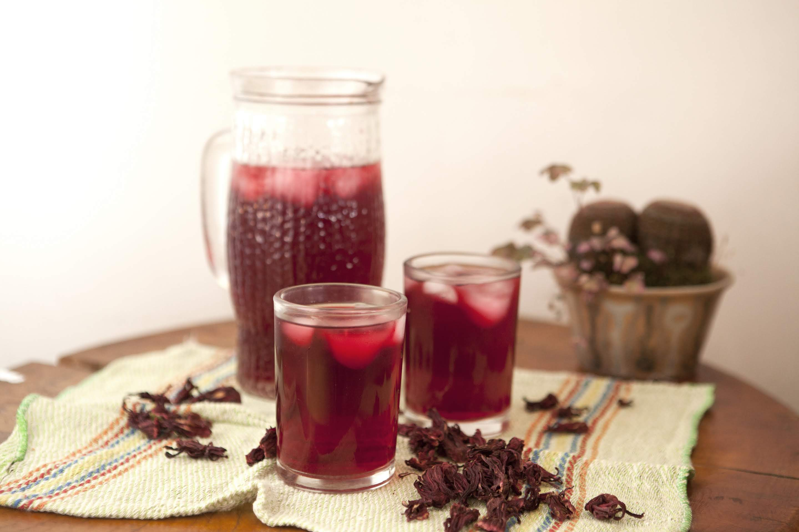

Agua de Jamaica

Descripción
El agua de jaimaica es una bebida muy rica y diurética. Esta bebida se
acostumbra tomar en México en las comidas, cenas, fiestas, etc. Prepara
esta deliciosa receta.
Ingredientes
- 1/4 tazas de azúcar, (al gusto)
- 9 tazas de agua
- 1 taza de flor de jamaica
Preparación
-
Ponga a hervir la flor de jamaica en el agua por 25 minutos o hasta que
esta tome un color muy rojo.
-
Retire el agua del fuego y permita que se enfrie. Cuele el agua para
retirar las flores.
-
En una jarra mezcle el agua con el azúcar. Refrigere por al menos 30
minutos antes de servir y agregue hielos.